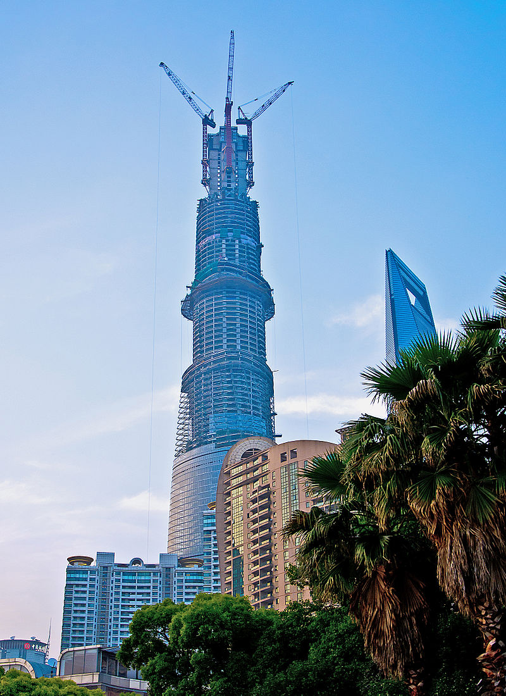
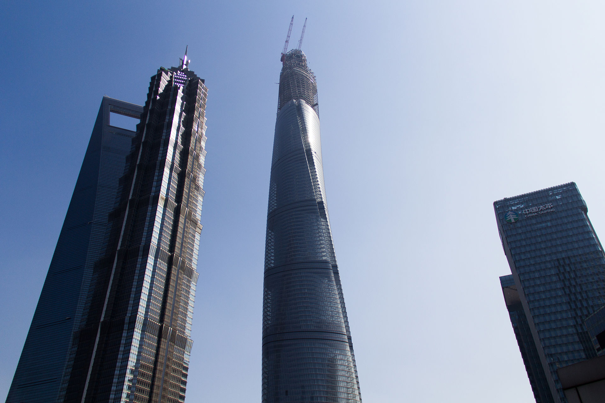

Shanghai Tower
Miasto: Szanghaj
Państwo: Chiny
Wysokość (w metrach): 632
Liczba kondygnacji: 128
Rok budowy: 2015
Powierzchnia (w tys. m²): 380
Shanghai Tower – wieżowiec znajdujący się w dzielnicy Pudong w Szanghaju w bezpośrednim sąsiedztwie Jin Mao oraz SWFC. Budowa zaczęła się w 2008 r. jej zakończenie zaplanowano na rok 2015, ostatecznie budynek został oddany do użytku w roku 2017. Inwestorem oraz wykonawcą jest Shanghai Tower Construction Development Co., Ltd. reprezentująca trzy firmy: Shanghai Chengtou Corp., Luijiazui Finance Trade Zone Development Co., Ltd., oraz Shanghai Construction Group. Wieżowiec zaprojektowało biuro architektoniczne Gensler. Koszt budowy wyniósł 2,4 mld $. Wieżowiec jest najwyższym w Chinach oraz trzecim pod względem wysokości na świecie, niższym tylko od Burdż Chalifa w Dubaju w Zjednoczonych Emiratach Arabskich i Merdeka 118 w Kuala Lumpur w Malezji.
